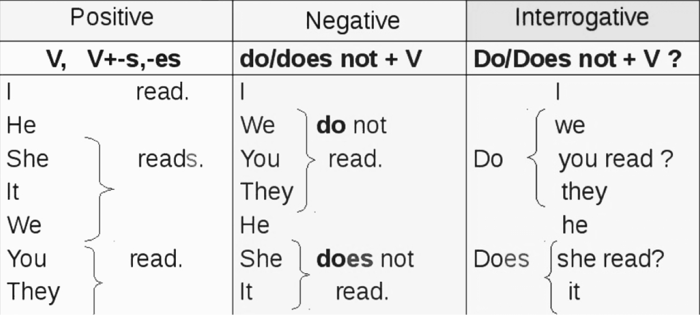

PRESENT CONT.
МЕДИТАЦІЇ
Як зменшити рівень тривожності та почати вести більш усвідомлений спосіб життя?
У цьому уроці ми поговоримо про теперішній час та медитації.
1. Запитуйте себе про свої почуття
Ставте собі запитання «Що я зараз відчуваю?» протягом дня. Воно запускає механізм самоаналізу у вашій голові та допомагає розібратись у власних почуттях.
Більш того, ставити це запитання варто не лише собі, а й близьким. Це дасть змогу уникнути багатьох непорозумінь і сварок, що виникають через непорозуміння.
2. Зосередьтесь на чомусь одному
Коли ви вчитеся жити сьогоднішнім днем, корисно зосереджувати свою увагу на чомусь одному. Хоча багатозадачність і робота над кількома справами одночасно може здаватися продуктивнішою, постійне жонглювання кількома завданнями заважає жити теперішнім моментом та погіршує концентрацію.
3. Приймайте речі такими, якими вони є
Зосередьтеся на прийнятті речей такими, якими вони є, а не на тому, якими ви хочете їх бачити. Ви не можете контролювати все, що відбувається навколо вас; іноді життя буде відрізнятися від того, як ви хочете, щоб воно було. Практика прийняття допоможе вам відпустити речі у вашому житті, які ви не можете контролювати.
4. Практикуйте вдячність
Якщо ви постійно зосереджені на тому, чого у вас немає, ви не знаходите часу, щоб оцінити те, що у вас є прямо зараз, у цей момент.
Один із способів практикувати вдячність - написати список речей, за які ви вдячні, і переглядати його щодня. Спробуйте написати принаймні три речі. Як варіант, ви можете просто виписати стільки речей, скільки зможете пригадати за певний період часу.
5. Відпочивайте від соціальних мереж та ґаджетів
Хоча вам може здаватися, що постійна перевірка телефону допомагає вам залишатися на зв'язку зі світом, насправді це негативно впливає на вашу здатність жити теперішнім.
Скільки разів ви сідали за роботу, а потім усвідомлювали, що перевіряєте соціальні мережі? Важливо навчитися не дозволяти технологіям поглинути ваше життя, оскільки це може завадити вам бути уважними до того, що відбувається навколо вас.
Present Continuous
Він використовується для:
а) вираження певного факту або інформації, що не зв'язана з певним часовим проміжком, а є актуальними загалом. Часто це чиїсь звички або вподобання;
б) опису загальновідомих істин, наукових фактів, явищ природи, того, що за думкою мовця завжди є незмінним;
в) вираження дій, що регулярно відбуваються або часто повторюються. Часто це звички або щоденний розклад людини;
г) вираження розкладу чогось (потягів, автобусів, телепрограм тощо);
д) написання інструкцій, вказівок, рецептів тощо;
е) зображення або опису послідовних дій, що відбуваються в цей момент, наприклад, в спортивних оглядах, коментування новин, матчів, переказі історій тощо.
Маркери часу:
- always – завжди
- often – часто
- usually – звичайно
- regularly – постійно, регулярно
- from time to time – час від часу
- sometimes – інколи
- seldom – зрідка, подеколи
- rarely – рідко
- never – ніколи
- every day – кожного дня, щодня, кожний день
- every week – кожного тижня, щотижня, кожний тиждень
- every month – кожного місяця, щомісяця, кожний місяць
- every year – кожного роки, щороку, кожний рік
- at the weekend – на вихідних
- at weekends – по вихідним
- at 7 o'clock – о 7-й годині (в розкладах)
- twice a week – два рази (двічі) на тиждень
- three times a week – три рази (тричі) на тиждень
- four times a month – чотири рази на місяць
- on Mondays – щопонеділка
- on Sundays – щонеділі
Правила формування:
Present Simple - це про вміння жити теперішнім, тож наведемо декілька прикладів використання:
- I focus on one task at a time, because multitasking isn't beneficial for me. - Я зосереджуюсь на одному завданні тому, що багатозадачність не є корисною для мене.
- She writes one thing she is grateful for every day. - Вона записує одну річ, за яку вона вдячна кожного дня.
- They don't check their phone at weekends. - Вони не перевіряють телефон на вихідних.
- He doesn't often ask himself about his feelings, that's why he is always so irritated. - Він не часто запитує себе про свої почуття, тому він завжди такий роздратований.
- Do we practice mindfulness on Tuesdays? - Чи ми практикуємо усвідомленість щовівторка?